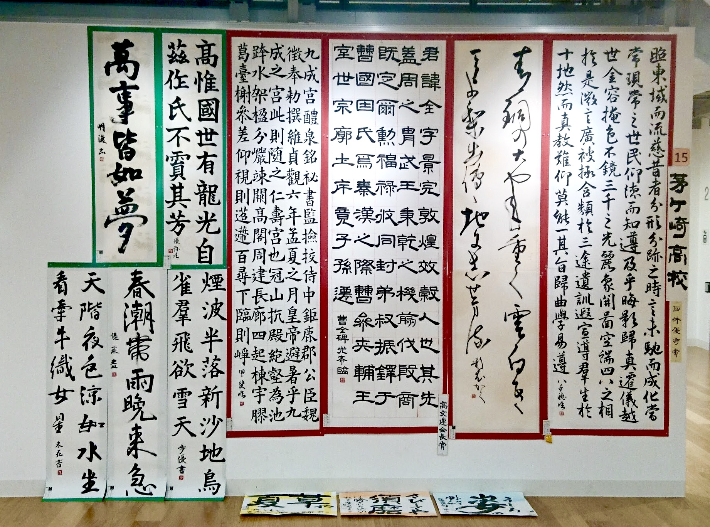
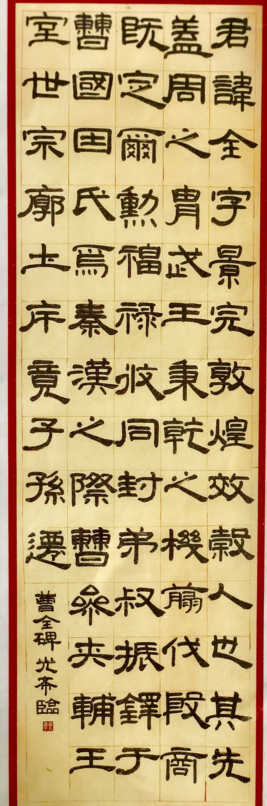
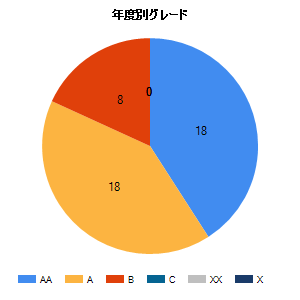
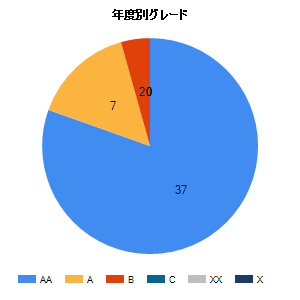

私は選択肢の中から一歩踏み出さなくてはならないものを選びます。些細なことですが、授業内での積極的な質問や研究室の訪問を行うなど、自分が飛び込んだ環境下では最大限の能動的な取り組みを常に意識しています。なぜなら、今までの人生において自分の身になっている事は自発的な取り組みによってもたらされたものであるからです。そして今回のLINEデザイナーインターンに参加する事も、私にとっては一歩踏み出す選択肢の一つでした。
今回の選考課題ヘ全力で挑む事を経験し、自分自身の成長につなげようと考えています。私は大学で人間工学の授業を受けた事をきっかけに、認知特性を活かしたデジタルと人間とのインタラクションをデザインする事の面白さを知りました。実際に課題を通して、コンテンツを最大限に活かすデザインをどのように設計していくか、実際に自らが設計する事で理解を深める事ができたと感じております。
当課題に挑むにあたって、コンテンツの情報を最大限伝えるために、スマートフォンで最適化された限りなく認知負荷の小さいデザインを設計する事を考え、そこでメタファを利用したマテリアルデザインを利用する事にしました。実際の完成物を作りたいと考えWeb言語を用いることにしたものの、基本的なHTMLしか学んだ事のない私はCSSやjQuery,googleのマテリアルデザインの要件を一から学びました。そして実際にsketchでデザインを設計し、コードに落とし込むという一連の作業を行いました。実際に体験する事を通してデザイン設計の難しさを感じたとともに、様々なアプリケーションの細やかな動作やデザインに目がいくようになり、自分にとって大きな成長に繋がったと感じています。
私は小学生以来、１０年間にわたって書道に打ち込んでいます。書道が私に教えてくれたのは、継続することの本質的な意味です。
小中学校では段位を上げること、高校時代には表彰されること、現在は師範を目指すなど、常に目的を設定して毎日少しずつ取り組んでいく中で、作品を書き上げる際に改善すべき点や、もっと活かすべき点がふとした時に見えることがあります。この体験は地道な日々の継続の中でしか現れず、このことが日頃の学業やアルバイトにおいても、継続するときのモチベーションとなっています。

私の中で、継続するマインドが確立されたのは高校時代の書道部での経験があったからだろうと思います。それまでは書道のことを個人競技であると認識し、一人で黙々と作品を描き続けていました。しかし、部活内では団体として書道展覧会に出場しなくてはなりません。私は展覧会のためにメンバーの作品をどのように展示すべきか、各個人作品の歴史・書体を勉強し、意味のあるレイアウトを作り出すことを心がけました。
また、制作においては個人の作品を第三者による視点から評価してもらうシステムをチーム内に設けることや、日々の制作の繰り返しの中でいつもと異なる点を見つけ、評価し制作に反映することを繰り返しました。結果として部は団体優秀賞に選ばれ、私自身の作品は神奈川県でトップ１０にも選ばれました。能動的に他者との関わり合いを求めていくこと・繰り返しの中で改善点を見つけることの継続は、勇気や労力が要る一方で目標の達成になくてはならないことだと強く感じています。

共感力とは他者の考えを自分の持つ「正論」で退けず、好奇心を持って理解に努めることであると私は考えます。そしてそのような意味において、私が最も大切にしている力の一つです。
共感力を持つことは生きていく上で非常に便利な手段です。全く別の人生を生きてきた他者の考えや物の見方を、吸収できる最もいい手段であるからです。また共感によって得られた他者への理解から、その人が本当に求めている非言語的な要素を汲み取ることで、それに対する意見を提示しやすくなり他者貢献へと繋がります。私は次の二つのアルバイトを通して、その重要性を日々感じています。
商品を購入して頂くためには、ある顧客にとっての最適解を提示することが必要であり、アパレルショップでの接客という非常に短い期間でのコミュニケーションでは共感力が非常に重要な意味を持ちます。販売側としてただアドバイスするのではなく、顧客の好みを理解・共感する事でその嗜好に合わせたアイテムを直感的にリストアップし提供することを心がけています。
「塾」という場所での主役は講師ではなく生徒であるという認識のもと、生徒が主導して勉強を進めていけるように全力でサポートすることに徹しています。そのために、生徒一人一人の得意不得意や勉強への姿勢に対し共感することで、生徒の理解度が把握しやすくなり自分の経験則に頼らない教え方を提供出来ています。
プログラミングをすること2年、数え切れないほどのコンパイルエラーに遭遇し、その度に現状としての構造を把握・分析し起きている問題を段階的に特定することを繰り返した結果、他人のコードに生じているエラーの原因を特定・修正することが得意になりました。この力は、学業において大いに役立っています。
大学入学時点から、自分が積極的に勉強していることを証明すべく学業成績優秀者を目指して取り組んでいましたが、結果は GPA:3.2/4.0 と、1年目の結果としてはあまり芳しくなかったです。

この結果によって得られた好成績でない教科の中から、どの成績指標に対して自分が弱いのかを分析し、2年次は該当教科の対策を重点的に行ったところ、 GPA:3.8/4.0 まで改善することができました。

しかしながら今年も学業成績優秀者に選ばれることはありませんでした。依然として残る課題を分析し、今年も全力で取り組んでいきます。